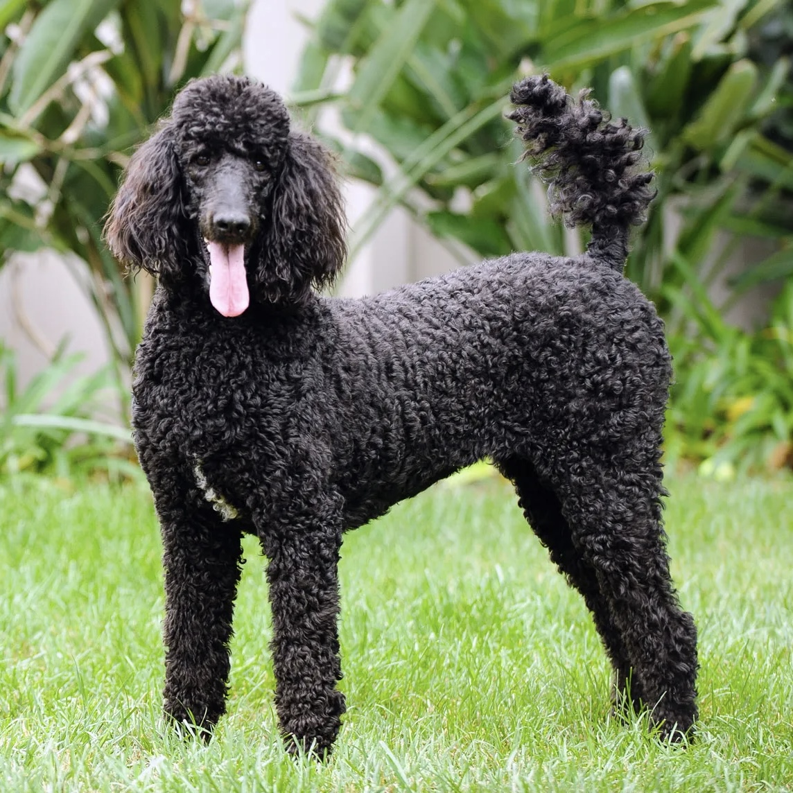

| Photo | Breed | Rank | Size | Origin Country | Lifespan |
|---|---|---|---|---|---|
|
French Bulldog | #1 | Small | France | 11-14 years |
| Labrador Retriever | #2 | Medium-Large | Canada | 10-12 years | |
| Golden Retriever | #3 | Medium-Large | Scotland | 10-12 years | |
|
German Shepherd | #4 | Large | Germany | 9-13 years |
|  | Poodle | #5 | Medium-Large | France | 12-15 years |
| Bulldog | #6 | Medium | England | 8-10 years | |
| Rottweiler | #7 | Medium-Large | Germany | 8-10 years | |
| Beagle | #8 | Medium | England | 12-15 years | |
| Dachshund | #9 | Small-Medium | Germany | 12-16 years | |
| German Shorthaired Pointer | #10 | Medium-Large | Germany | 12-14 years |